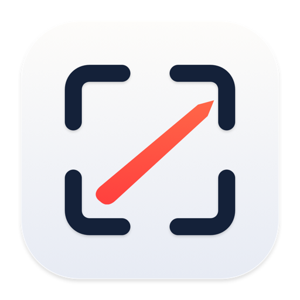

Open the download
Click ShotMark.dmg in your browser’s downloads, or find it in your Downloads folder.

Capture anything on your screen, mark it up and share a clear answer in seconds.
ShotMark is a Mac app. Open this page on your Mac to download it.
Three quick steps and you’re capturing. Download didn’t start? Try again.
Click ShotMark.dmg in your browser’s downloads, or find it in your Downloads folder.
Drop the icon on the Applications folder. If you open it from the installer instead, ShotMark offers to move itself.
Open it from Applications or Spotlight. A short welcome turns on screen capture and walks you through your first shot.